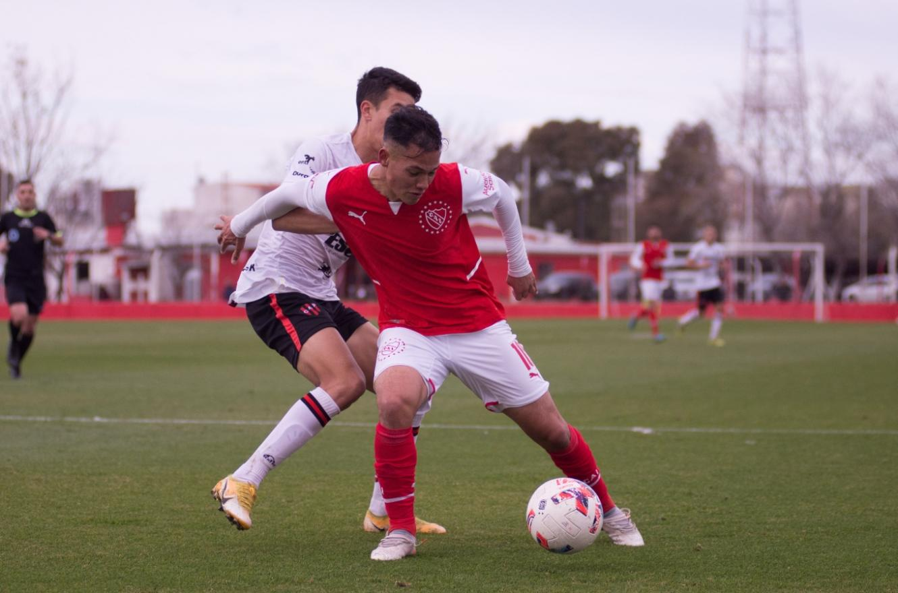
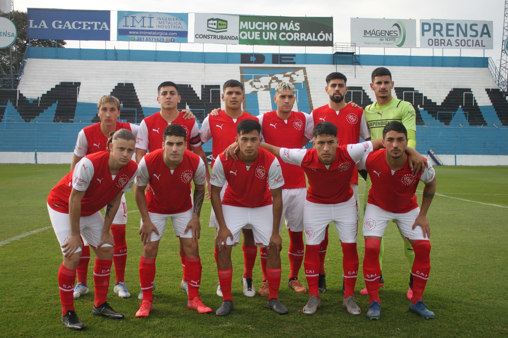

Goleada de la reserva

La reserva triunfó en Tucumán

- 4ta | Independiente 1-1 Colón (Juan Martín Gentile)
- 5ta | Independiente 4-0 Colón (Tomás Rambert x2, Nicolás Castaño y Mateo Tappero)
- 6ta | Independiente 0-0 Colón
- 7ma | Independiente 2-3 Colón (David Ojeda y Santiago López)
- 8va | Independiente 2-0 Colón (Alvez y Gómez)
- 9na | Independiente 0-0 Colón